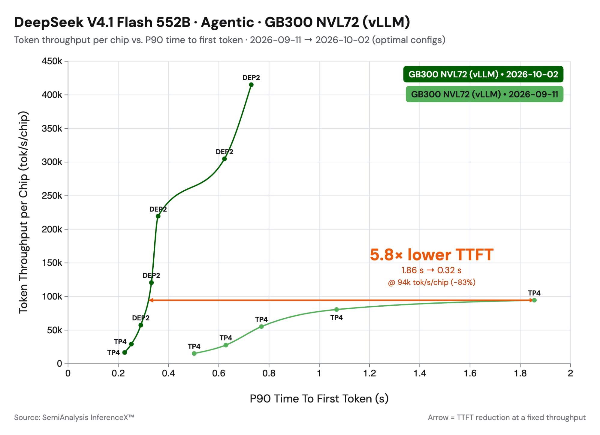

译注:本文译自 vLLM 官方博客 DeepSeek-V4.1-Flash on vLLM: 5x Agentic Throughput Since Day 0(2026-10-07)。专有名词(prefill、decode、TTFT、KV cache、rank 等)在首次出现时给出中文,部分保留英文原词以便对照。

图 1:从模型发布首日(day 0)到 10 月 2 日,vLLM 在 SemiAnalysis AgentX 上的结果(来源)。
TL;DR: 在 DeepSeek-V4.1-Flash 发布后的三周里,Inferact 与 vLLM 社区对该模型做了优化,在低并发下取得 1.9× 的加速,在 150 TPS 约束下取得 5.3× 的吞吐提升。性能提升来自:
-
我们实现了配合 CUDA graph 的 SWA 有界重放(bounded replay),使 TTFT 降低约 30%。
-
我们集成了 DeepSeek 新发布的内核,包括 MegaAttention、Mega-mHC、Mega-Gate 和 DeepSelect。
-
我们对其余内核做了激进的融合与并行化,包括 mHC 旁路流(side stream),并把 all-reduce 与其前后的算子融合成单个内核。
DeepSeek V4.1 为长程智能体(agentic)服务任务引入了一种高效的架构:借助因果编码器-解码器(causal encoder-decoder,CED)架构,模型在解码(decode)时每个 token 激活 16B 参数,而在预填充(prefill)时只激活 8B 参数。该模型的内存效率也极高。它组合了多种技术来压缩 KV 缓存大小:压缩稀疏注意力 2(Compressed Sparse Attention 2,CSA2)、FP4 KV 缓存,以及层间 KV 缓存共享,把全局 KV 的占用压到每 token 890 字节。本文展示我们如何把 DeepSeek 的这些模型层优化与 vLLM 侧的系统优化结合起来,在 SemiAnalysis AgentX 智能体服务基准上实现 5× 吞吐。我们把优化分成两类来介绍:SWA 有界重放,以及与内核相关的优化。
SWA 有界重放
DeepSeek-V4.1-Flash 保存两种 KV 缓存。全局 KV 是压缩过的、跨层共享的,并以 FP4 存储,每 token 约 890 字节(V4.1 技术报告)。滑动窗口(SWA)KV 则是未压缩的 FP8,覆盖 40 层中每一层的最后 128 个位置。
SWA KV 带来两项开销:
-
前缀缓存(prefix caching)必须在每一个可能的命中边界都存一份,存储开销是全局 KV 的 10 倍以上。
-
预填充要在每个 prompt token 上运行第 21–39 层,而解码只读取它们最后 128 个位置。
一种直接的办法是重新计算 SWA KV 而不是缓存它。但精确重算代价很高,因为每一层的 128-token 窗口都依赖于下一层中更早的位置,所以在 L 层上重建它,大约要重放 L × 128 个 token。
DeepSeek V4.1 引入了 SWA 有界重放,以精确性换效率。它只重跑最后 128 个 token,并把 SWA 窗口在重放起点处截断。结果不是逐位精确的,但 DeepSeek 报告质量损失可以忽略(详见下文)。vLLM 在两处应用它,各对应一项开销。
图 2:精确重建会逐层级联,每层多回溯一个窗口。有界重放只重算最后一个窗口,并在重放起点 s 处截断。可逐步演示,或全屏打开。
编码器侧:缓存命中时重建窗口
采用编码器侧重放后,vLLM 只缓存全局 KV,跳过 SWA KV。当前缀命中长度为 H 时,它重跑 token [H − 128, H) 来重建 SWA KV,窗口在 s = H − 128 处截断。
解码器侧:跳过大部分 prompt 预填充
在 DeepSeek V4.1 的 CED 架构中,第 20 层计算解码器的全局 KV,第 21–39 层复用它。因此 vLLM 在每个 token 上运行第 20 层以产生该全局 KV,而第 21–39 层只在每个请求的最后 128 个 token 上运行。对于长 prompt,这相当于跳过了将近一半的模型。
图 3:在解码器中,只有第 20 层的全局 KV 需要对每个 token 计算。第 21–39 层只在最后 128 个 token 上运行。可逐步演示,或全屏打开。
为裁剪后的层使用 CUDA graph
裁剪之后,第 21–39 层的 GPU 工作量非常小,如果以 eager 方式运行,内核启动(launch)开销会占主导,GPU 反而闲着。它们的输入形状也与第 0–20 层不同,所以这两部分无法被捕获进同一个 CUDA graph。vLLM 的可断开 PIECEWISE graph 本来就在模型中部断开,这提供了一个天然的切分点:第 0–20 层在完整 batch 上捕获,第 21–39 层在裁剪后的 batch 上单独捕获。这使得 CUDA graph 可用于裁剪后的预填充,并让第 21–39 层使用自己的捕获尺寸,以获得更好的 graph 覆盖率。
SWA 有界重放对 DeepSeek-V4.1 默认开启,由 --[no-]swa-bounded-replay 控制。
精度与性能结果
虽然 SWA 有界重放并不精确,但 DeepSeek 报告其质量损失可以忽略。我们在 vLLM 中用 GSM8K、GPQA 等基准做了确认,没有观察到有意义的精度差异(差距在约 1.5 个标准误以内)。
性能方面,编码器侧是用每次命中多跑一个窗口的预填充来换缓存空间,所以加速来自解码器侧。我们在三种设置下测量单请求预填充 TTFT:关闭重放;开启重放但不使用解码器 CUDA graph(第 21–39 层以 eager 方式运行,且只有 eager 步骤被裁剪);开启重放并使用解码器 CUDA graph。
图 4:DeepSeek-V4.1-Flash 在 SWA 有界重放关闭与开启、使用与不使用解码器 CUDA graph 时的单请求预填充 TTFT(毫秒)。NVIDIA GB200 上 3 次运行的中位数,前缀缓存关闭。百分比相对于关闭重放(越低越好)。鼠标悬停在柱子上可看 TTFT 绝对值,或全屏打开。
解码器重放配合 CUDA graph 可将预填充计算时间削减 30–40%。 CUDA graph 对短 prompt 最重要,因为此时内核启动是瓶颈:没有它,启动开销超过了 GPU 上省下的时间,重放反而比基线更慢(DEP2 上 1K 时最多 +12%)。对于长 prompt,GPU 工作量足够大,可以掩盖启动开销,所以 eager 重放已经拿到了大部分收益,CUDA graph 再多贡献几个百分点。
内核
DeepSeek 在发布 DeepSeek-V4.1-Flash 的同时,在它的三个代码仓库里发布了新内核。DeepSelect 是面向 DeepSeek 稀疏注意力的一个新 top-k 库。DeepGEMM 新增了稀疏索引器(indexer)内核和若干与 GEMM 相关的融合内核。FlashMLA 新增了 NVFP4 KV 缓存支持和一个融合注意力内核 MegaAttention。我们已经把其中多个开源内核集成进 vLLM,并在 #57448 中跟踪进展。
图 5:DeepSeek-V4.1 的单层前向过程。金色轮廓标出内核融合及其对应的 vLLM PR。可逐步查看低延迟路径和高吞吐路径,点击 FULL LAYER 查看整层,或全屏打开。
Mega-mHC(#56962)。 Mega-mHC 把 mHC 链融合成一个内核:post 步骤、延迟的 pre 步骤(delayed-pre)以及 RMSNorm。它取代了原有的 TileLang 融合路径,DeepGEMM 的实现现在已经超过了后者。在 NVIDIA GB200 上,该内核比 TileLang 版本快 1.14–1.51×。
Mega-Gate(#56266)。 Mega-Gate 把 MoE 路由器(gate GEMM、专家打分、偏置和 top-k 选择)融合成一个内核。此前这些操作是一次 GEMM 加一个独立的 top-k 内核,多付出一次内核启动,以及分数在内存中的一次往返。这项融合在中等 batch 大小下带来 1.18–1.31× 的内核加速。
mHC 多流重叠(multistream overlap)(#57603)。 在 V4.1 中,mHC 系数被平移了一个子层,所以下一个接缝处的系数 GEMM 只读取在注意力或 FFN 运行之前就已存在的残差流。在下一次 post/pre 步骤把二者合并之前,任何一方都不需要对方的输出。在小 batch 下,vLLM 现在把下一个 mHC 块的系数放到一条旁路 CUDA stream 上计算,与注意力和 FFN 并行。这把原本落在延迟受限解码关键路径上的工作隐藏了起来。在 TP4 低延迟场景下,这使延迟降低约 4%。
稀疏 MQA logits(#56254)。 在 V4.1 中,靠后的索引器层从一个固定的 16K 候选位置集合中选取 top-k。以前的实现是对整个上下文计算分数,并在打分前屏蔽所有非候选块。DeepGEMM 的稀疏内核只对候选打分,因此开销不再随上下文增长。在 NVIDIA GB300 上按单层计,8K token 时快 1.2×,512K 时快 14–23×。在 4× NVIDIA GB300 上端到端来看,解码提升 3–6%;预填充在 512K 上下文时快 1.43×,在 1M 上下文时快 2×。
支持 NVFP4 压缩 KV 的 MegaAttention(#56935)。 FlashMLA 的 MegaAttention 内核在一次启动中完成查询 RoPE、稀疏注意力、对输出做逆 RoPE 以及 FP8 转换,直接写入输出投影所读取的缓冲区。这消除了注意力与下一层之间的独立内核和内存往返。它还能读取一种新的 NVFP4 压缩 KV 格式,比之前的 FP8 KV 缓存小 45%。MegaAttention 还通过激进的融合消除了算子之间的 HBM 写入,把内核效率提升了 1.45×。
低延迟融合 WO-A 内核(#58634)。 针对 Blackwell 上的小解码 batch,我们把逆 RoPE、FP8 量化、WO-A batch GEMM 以及 MXFP8 再量化融合进单个 CuTe-DSL 内核,把 WO-B 之前的链路从三个内核减为一个。核心思路是让中间激活值留在片上,并把数据搬运与计算流水化,避免在小 batch 下占主导的额外内核启动和全局内存往返。这使融合后的 WO-A 路径最多提速约 2.1×,并在低并发下使 token 间延迟(inter-token latency)最多降低约 6–7%。
Engram。 V4.1 的 Engram 层从两张大型 FP8 表中查找行,键是哈希后的 token n-gram。每一步只读取少量行,所以表的放置位置和查找延迟比计算更重要。我们对卸载到 CPU 的 Engram 查找做异步预取,让主机内存访问与解码器计算重叠,以加速小 batch 解码(#56512)。Engram 头采用统一的 TP/DP 方案分片,同机部署的 DP 副本共享同一份主机表,避免了冗余拷贝以及查找路径上的任何 DP 通信(#57651)。针对这些驻留在主机上的大表,我们还支持透明大页(THP)以降低缺页开销,使预填充的查找内核最多快 10×(#56926)。我们也为可用大页不足的情况加入了优化(#59327)。
智能体性能
我们用 SemiAnalysis AgentX 基准作为有代表性的智能体服务负载来衡量性能(详见我们的上一篇文章)。这些优化合在一起,使 vLLM 相比我们首日的实现有了显著的性能提升。如图 6 所示,我们的低延迟结果比首日结果提升 1.9×,高吞吐结果提升约 5×。
图 6:从模型发布首日到 10 月 2 日,vLLM 在 SemiAnalysis AgentX 上的结果(来源)。
对于低延迟服务,我们使用 TP4 配合 FlashInfer 注意力。小 batch 解码主要受内存带宽限制,所以把模型权重分片到四块 GPU 上很合适。我们也试过 MegaAttention,但它的主要优势在更高吞吐的场景,那里融合有更大的发挥空间。在 TP4 下这一收益小得多,在我们的测试中 FlashInfer 最终更快。
对于高吞吐,我们切换到 DEP2,使用 DP 注意力并把专家拆分到各 GPU 上。由于 V4.1 在所有注意力头之间使用共享的 KV 隐变量(latent),TP 会让 KV 缓存在各 GPU 上重复一份。DP 避免了这种重复:每块 GPU 只为它服务的请求存储 KV,并通过会话亲和性(session affinity)在多轮之间保持前缀缓存的局部性。MegaAttention 借助 NVFP4 进一步削减了每请求的 KV 占用,相比 FP8 几乎减半,从而提高了单 GPU 并发。
值得注意的是,V4.1 的内存效率很高,在整个基准测试中都不需要 KV 缓存卸载(offloading)。我们预计在采用 P/D 分离、并发更高时,KV 缓存卸载才会开始发挥作用。
SWA 有界重放加上预填充侧的内核优化,也大幅改善了 TTFT。

图 7:优化后的 TTFT 与吞吐的关系(来源)。
图 7 展示了优化后的 TTFT–吞吐权衡。在约 100K 吞吐处,三项优化合力使 TTFT 下降近 70%:
-
SWA 有界重放让模型的上半部分只处理最后 128 个 token,把预填充计算量削减约一半。
-
CUDA graph 让裁剪后的小规模重放在 GPU 上保持高速,而不是受限于 CPU 的内核启动,所以我们能拿到完整的加速。
-
内核改进加速了模型计算本身。
致谢
我们感谢 DeepSeek 开源 DeepSeek-V4.1-Flash 及相关内核,感谢 Inferact 团队完成最初的模型适配与优化,感谢 NVIDIA 的协作与支持,感谢 SemiAnalysis 提供 AgentX 基准。